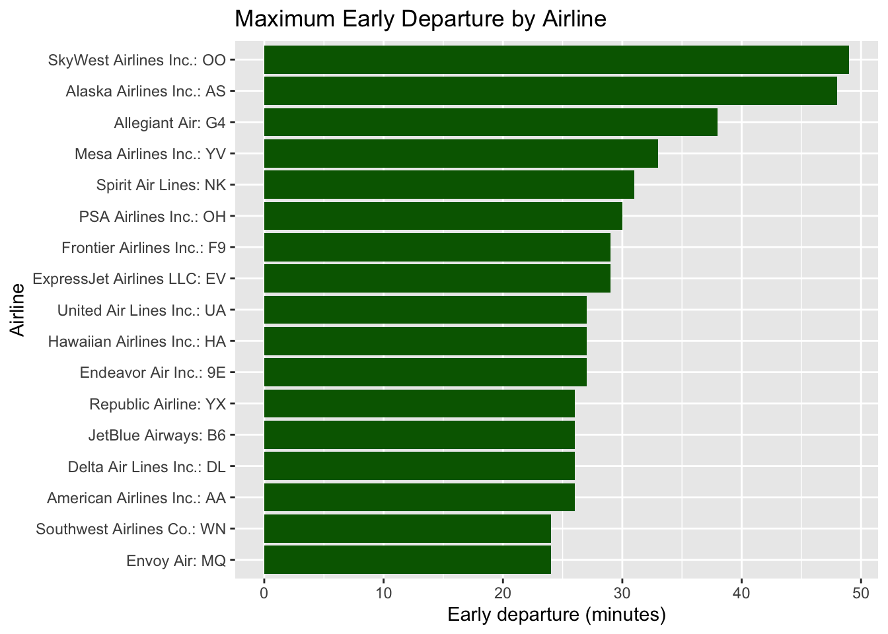
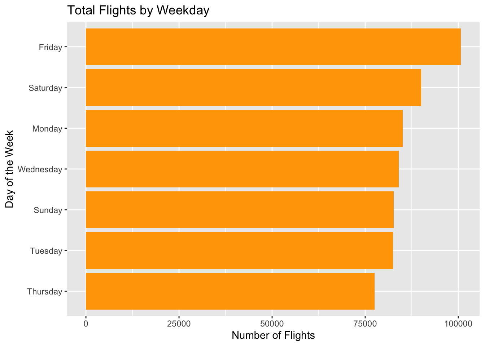
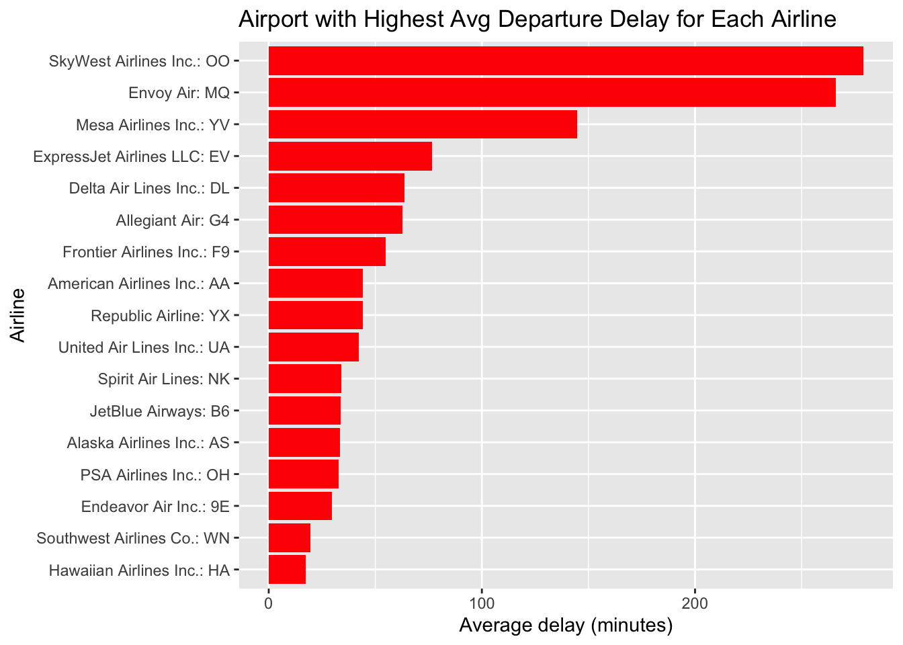

Air travel plays a critical role in modern transportation, connecting millions of passengers across cities every day. Understanding the factors that influence flight performance—such as delays, cancelations, and traffic patterns—is essential for improving operational efficiency, enhancing customer experience, and supporting data-driven decision-making within the aviation industry.
In this project, we analyze the Airline On-Time Performance dataset from November 2019, combining it with several dimension tables to enrich the information related to airlines, airports, distances, weekdays, and cancelation codes. By integrating these datasets, we uncover meaningful patterns in flight operations from both the airline and airport perspectives.
Our analysis addresses a series of targeted questions:
Which airlines experience the longest delays or the earliest departures?
How does flight activity vary across days of the week?
Which airports show the highest average delays, both overall and for each airline?
Are cancelations common, and what are the most frequent reasons behind them?
How do daily flight volumes change over time, and what trends emerge when using a moving average?
Through SQL queries, visualizations, and data-driven storytelling, we aim to provide a comprehensive overview of U.S. flight operations during this period. The findings highlight not only performance differences among airlines and airports but also broader structural patterns—such as demand cycles, congestion effects, and weather-related disruptions.
This project ultimately demonstrates the value of combining relational data analysis with visualization techniques to reveal insights that are both operationally relevant and intuitively understandable.
Full Data Story Version
Air travel delays are often seen as random inconveniences, but our analysis shows they follow clear and measurable patterns. By studying flight performance in November 2019, we uncover how delays emerge from the interaction of four major forces: airline operations, airport congestion, weather disruptions, and passenger demand cycles.
We begin by comparing airlines and observe substantial variation—some carriers frequently experience extreme delays, while others maintain tighter schedules. These patterns reflect differences in fleet management, route networks, and operational resilience.
Looking across days of the week, demand peaks sharply on Fridays, creating increased pressure across the entire aviation system. At the airport level, we find that certain airports consistently suffer the longest delays, driven by location, traffic volume, and weather exposure. For each airline, specific airports emerge as recurring bottlenecks, revealing where their network struggles the most.
Cancelation patterns reinforce this story: weather and carrier operational issues dominate across the busiest hubs. Meanwhile, the daily trend analysis shows that overall flight activity is stable, with only short-term dips during holiday and weather events—suggesting that disruptions are concentrated but predictable.
Together, these findings paint a coherent picture: delays are not random—they are the product of interconnected operational, environmental, and structural factors. By understanding these relationships, airlines and airports can better target improvements, and travelers gain a clearer view of what drives flight reliability.
The chart above compares the maximum recorded departure delay for each airline in the dataset. The results show substantial variation across carriers. Hawaiian Airlines and Southwest Airlines have the lowest maximum delays, indicating relatively stable schedule performance with fewer extreme disruptions.
On the opposite end, airlines such as Allegiant Air, American Airlines, PSA Airlines, and SkyWest Airlines exhibit the highest maximum delays, in some cases exceeding 1,800 minutes (over 30 hours). These extreme outliers suggest operational or weather-related disruptions that significantly affected certain flights.
While maximum delay is not representative of overall performance, it highlights which airlines experienced the most severe single-flight delays—a useful indicator of operational vulnerability during irregular events.
Maximum Early Departures
Code
q2 %>%ggplot(aes(x =reorder(Airline, Max_Early_Departure_Minutes),y = Max_Early_Departure_Minutes)) +geom_col(fill ="darkgreen") +coord_flip() +labs(title ="Maximum Early Departure by Airline",x ="Airline",y ="Early departure (minutes)" )

The second chart examines the maximum amount of early departure time for each airline. Unlike delays, early departures can also negatively impact passengers—especially those arriving at the gate just before the scheduled departure time.
SkyWest Airlines and Alaska Airlines show the largest early departures, with flights leaving more than 45 minutes early. Several other airlines—including Allegiant, Mesa, Spirit, PSA, and Frontier—also exhibit notable early departures of 25–35 minutes.
In contrast, airlines such as Envoy Air, Southwest, and American Airlines tend to have smaller early-departure extremes, suggesting tighter adherence to scheduled departure times.
These findings demonstrate that while delays often attract more attention, early departures are also a meaningful component of airline schedule reliability. Understanding both sides of schedule deviation provides a more complete picture of carrier performance.
Flight Activity by Weekday
Code
q3 %>%ggplot(aes(x =reorder(Weekday, Num_Flights),y = Num_Flights)) +geom_col(fill ="orange") +coord_flip() +labs(title ="Total Flights by Weekday",x ="Day of the Week",y ="Number of Flights" )

The chart displays the total number of flights for each day of the week. The results indicate that Friday is the busiest day, with the highest overall flight count. This aligns with typical travel patterns, as both business and leisure travelers frequently fly at the end of the workweek.
Saturday and Monday follow closely behind, suggesting strong weekend and early-week travel demand. Meanwhile, Thursday, Tuesday, and Sunday show moderately lower but still substantial flight volumes.
Interestingly, Wednesday and Sunday have slightly fewer flights compared to other days, which may reflect a dip in both business and leisure travel activity mid-week and at the end of the weekend.
These patterns help contextualize delay and cancelation trends observed in later sections of the analysis, as higher flight volume often corresponds to increased operational pressure on airlines and airports.
Airport Delay Analysis
Having understood delays by airline and weekday patterns, we now investigate whether specific airports consistently contribute to delays. ### Worst Airport Overall
Code
q4
# A tibble: 1 × 3
Airport_Name Airport_Code Avg_Departure_Delay
<chr> <chr> <dbl>
1 Eagle, CO: Eagle County Regional EGE 61.8
The analysis identifies Eagle County Regional Airport (EGE) as the airport with the highest average departure delay, at approximately 61.8 minutes per flight. Even after treating early departures as having zero delay, EGE still stands out significantly compared to all other airports.
This result suggests that structural or environmental factors unique to this airport—such as weather constraints, mountain geography, or limited runway capacity—may contribute to persistent delays. EGE’s elevated delay level makes it a critical point of inefficiency in the overall flight network.
Worst Airport for Each Airline
Code
q5 %>%ggplot(aes(x =reorder(Airline_Name, Avg_Departure_Delay),y = Avg_Departure_Delay)) +geom_col(fill ="red") +coord_flip() +labs(title ="Airport with Highest Avg Departure Delay for Each Airline",x ="Airline",y ="Average delay (minutes)" )

The chart below shows the airport where each airline experiences its highest average departure delay. This analysis highlights operational “pain points” specific to individual carriers.
SkyWest Airlines (OO) and Envoy Air (MQ) face particularly severe delays at their worst airports, averaging over 230 minutes—substantially higher than others. This suggests operational dependencies on congested or weather-sensitive airports.
Airlines such as Southwest (WN) and Hawaiian (HA) show relatively small maximum averages, indicating that their worst airports still perform reasonably well.
The variation across airlines highlights important differences in:
route networks
regional operating environments
airport partnerships or hubs
fleet characteristics
Understanding these pain points may help airlines optimize scheduling or allocate operational resources more strategically.
Cancelation Analysis
Are Flights Canceled?
Code
q6a
# A tibble: 1 × 1
Num_Canceled_Flights
<dbl>
1 4446
Our dataset confirms that cancelations do occur. A total of 4,446 flights were canceled during the study period.
While this represents only a small fraction of all flights, the presence of thousands of cancellations indicates that operational disruptions—whether caused by the airline, external systems, or weather—are a non-negligible factor in overall performance.
To better understand cancellation patterns, we identify the most common cancelation reason at each airport, and then highlight the Top 15 airports with the highest number of cancellations.
The visualization shows that:
Weather-related cancellations dominate several major airports—especially Chicago O’Hare (ORD) and Denver (DEN), which experience significant seasonal weather challenges such as snowstorms and low visibility.
Carrier-related issues (e.g., staffing shortages, mechanical problems, or internal disruptions) are more common at busy hubs like Los Angeles (LAX), Dallas/Fort Worth (DFW), and Charlotte (CLT).
Airports with the highest cancellations tend to be large national hubs, which face both heavy traffic volumes and complex operational constraints.
Overall, the analysis suggests that:
Weather is the leading cause of large-scale cancellations in northern or high-altitude airports.
Carrier-related issues tend to dominate in high-traffic, high-pressure hubs where airline operations are more complex.
Different airports experience different operational pressures, and cancellation patterns reflect these localized challenges.
Understanding these causes is crucial for both airlines and airport managers as they work to mitigate disruptions and improve travel reliability.
The chart shows the total number of flights for each day in November, along with a 3-day moving average that smooths short-term fluctuations to reveal the overall pattern.
Daily flight counts vary noticeably from day to day, reflecting operational and scheduling cycles within the airline industry. Despite these fluctuations, the 3-day moving average reveals a stable overall trend, with daily volumes consistently remaining around 20,000–21,000 flights throughout the month.
A few notable dips appear in the raw daily counts, but the moving average remains steady, indicating that these sudden declines are isolated anomalies rather than early signs of a downward trend. Near the end of the month, the chart shows a modest decrease—likely due to reduced flight activity during the Thanksgiving holiday period, followed by a quick recovery.
Overall, the moving-average line provides a clearer view of the underlying trend: flight activity remains strong and relatively stable across November, with only short-lived disruptions.
Conclusion
This project provides a comprehensive analysis of airline on-time performance using multiple dimensions of flight operations, including delays, early departures, airport congestion, cancelation behavior, and daily activity trends. By integrating data from several lookup tables and the main performance dataset, we are able to uncover insights that reflect both operational challenges and broader patterns in the U.S. aviation system.
Across airlines, we observe substantial variation in maximum departure delays as well as early departure behavior, indicating differences in operational efficiency, scheduling buffers, and exposure to congested routes. The weekday analysis reveals that flight volume peaks on Fridays, consistent with both business and leisure travel patterns, while mid-week days show slightly lower demand.
Airport-level analysis highlights that certain airports experience significantly higher average delays than others. These findings suggest that airport-specific factors—such as weather, runway capacity, traffic volume, or geographic constraints—contribute to persistent performance differences. When examining each airline’s “worst-performing” airport, we further see how carrier networks and route structures shape delay outcomes.
Cancelation analysis shows that cancelations do occur in notable quantities, with weather and carrier-related issues representing the most common causes at the airports with the highest cancelation counts. This emphasizes the dual role of environmental factors and operational decision-making in flight disruptions.
Finally, the daily trend visualization, using a 3-day moving average, reveals that flight activity remains relatively stable throughout the month, with occasional dips likely tied to holiday periods or short-term operational impacts. The moving average helps clarify that these fluctuations do not represent long-term declines but normal variation within a stable system.
Overall, these analyses collectively demonstrate how delays and cancelations arise from the interaction between airline scheduling practices, airport capacity, weather conditions, and passenger demand patterns. The findings highlight the importance of data-driven monitoring for improving operational resilience, optimizing schedules, and enhancing traveler experience.